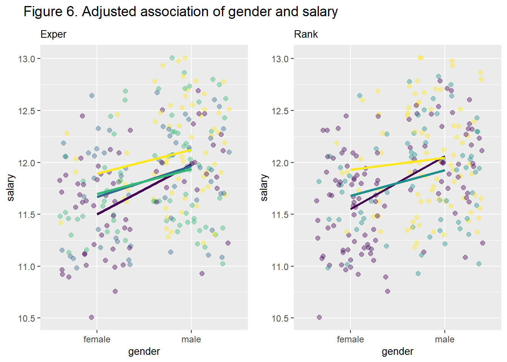

Gender Pay Gap
This is a group project for course P8130, analyzing the dataset Lawsuit with statistical methods, and draw a conclusion on gender pay gap issue.
Final Report
R Code
Below is the r code and outputs for this project.
Data cleaning
df = read.csv("./Lawsuit.csv")%>%
janitor::clean_names() %>%
mutate(dept = factor(dept,labels=c("biochemistry/molecular biology","physiology","genetics","pediatrics","medicine","surgery")),
gender = factor(gender,labels=c("female","male")),
clin = factor(clin,labels=c("primarily research emphasis","primarily clinical emphasis")),
cert = factor(cert,labels=c("not certified","Board certified")),
rank = factor(rank,labels=c("assistant","associate","full professor")))Descriptive table of data
my.render.cont <- function(x) {
with(stats.apply.rounding(stats.default(x), digits.pct = 2,
digits=7),
c("","Mean (SD)"=sprintf("%s (± %s)", MEAN, SD),
"Median "=sprintf("%s", MEDIAN),
"Range"=sprintf("%s~%s",MIN,MAX)))
}
my.render.cat <- function(x) {
c("", sapply(stats.default(x), function(y) with(y,
sprintf("%d (%0.0f %%)", FREQ, PCT))))
}
df%>%
rename("salary in 95" = sal95, "salary in 94" = sal94) %>%
table1(~`salary in 94`+`salary in 95`+prate+exper+rank+clin+cert+dept|gender,
data=.,topclass="Rtable1-zebra",
render.continuous=my.render.cont,
render.categorical=my.render.cat)| female (n=106) |
male (n=155) |
Overall (n=261) |
|
|---|---|---|---|
| salary in 94 | |||
| Mean (SD) | 118871.3 (± 56168.01) | 177338.8 (± 85930.54) | 153593.3 (± 80469.67) |
| Median | 108457.0 | 155006.0 | 133284.0 |
| Range | 34514.00~308081.0 | 52582.00~428876.0 | 34514.00~428876.0 |
| salary in 95 | |||
| Mean (SD) | 130876.9 (± 62034.51) | 194914.1 (± 94902.73) | 168906.7 (± 88778.43) |
| Median | 119135.0 | 170967.0 | 148117.0 |
| Range | 38675.00~339664.0 | 58923.00~472589.0 | 38675.00~472589.0 |
| prate | |||
| Mean (SD) | 5.350000 (± 1.886052) | 4.646452 (± 1.937909) | 4.932184 (± 1.944430) |
| Median | 5.250000 | 4.000000 | 4.400000 |
| Range | 2.400000~8.700000 | 1.300000~8.600000 | 1.300000~8.700000 |
| exper | |||
| Mean (SD) | 7.490566 (± 4.166180) | 12.10323 (± 6.703531) | 10.22989 (± 6.227176) |
| Median | 7.000000 | 10.00000 | 9.000000 |
| Range | 1.000000~23.00000 | 2.000000~37.00000 | 1.000000~37.00000 |
| rank | |||
| assistant | 69 (65 %) | 43 (28 %) | 112 (43 %) |
| associate | 21 (20 %) | 43 (28 %) | 64 (25 %) |
| full professor | 16 (15 %) | 69 (45 %) | 85 (33 %) |
| clin | |||
| primarily research emphasis | 46 (43 %) | 55 (35 %) | 101 (39 %) |
| primarily clinical emphasis | 60 (57 %) | 100 (65 %) | 160 (61 %) |
| cert | |||
| not certified | 36 (34 %) | 37 (24 %) | 73 (28 %) |
| Board certified | 70 (66 %) | 118 (76 %) | 188 (72 %) |
| dept | |||
| biochemistry/molecular biology | 20 (19 %) | 30 (19 %) | 50 (19 %) |
| physiology | 20 (19 %) | 20 (13 %) | 40 (15 %) |
| genetics | 11 (10 %) | 10 (6 %) | 21 (8 %) |
| pediatrics | 20 (19 %) | 10 (6 %) | 30 (11 %) |
| medicine | 30 (28 %) | 50 (32 %) | 80 (31 %) |
| surgery | 5 (5 %) | 35 (23 %) | 40 (15 %) |
Data distribution
distribution94 = ggplot(aes(x=sal94),data=df)+
geom_histogram(aes(y = ..density..,,fill=..density..),color = "black", bins = 30, alpha = 0.7) +
scale_fill_gradient(low="#99cfbe", high="#0b69db") +
labs(title = "1994", x="Salary, $", y="Density") +
scale_x_continuous(labels = function(x) format(x, scientific = FALSE)) +
theme(plot.title = element_text(hjust = 0, size = 12), axis.text.x = element_text(size = 9), axis.title.x = element_text(size = 10), axis.text.y = element_text(size = 9), axis.title.y = element_text(size = 10), legend.position = "none")
distribution95 = ggplot(aes(x=sal95),data=df)+
geom_histogram(aes(y = ..density..,,fill=..density..),color = "black", bins = 30, alpha = 0.7) +
scale_fill_gradient(low="#ede577", high="#fca205") +
labs(title = "1995", x="Salary, $", y="Density") +
scale_x_continuous(labels = function(x) format(x, scientific = FALSE)) +
theme(plot.title = element_text(hjust = 0, size = 12), axis.text.x = element_text(size = 9), axis.title.x = element_text(size = 10), axis.text.y = element_text(size = 9), axis.title.y = element_text(size = 10), legend.position = "none")
distribution94 + distribution95 + plot_annotation(
title = "Figure 1. Salary Distribution by year",
theme = theme(
plot.title = element_text(size = 14,hjust = 0.1)
)
)
salary_94 = ggplot(aes(x=sal94),data=df)+
geom_histogram(aes(y = ..density..,,fill=..density..),color = "black", bins = 30, alpha = 0.7) +
scale_fill_gradient(low="#99cfbe", high="#0b69db") +
labs(title = "1994", x="Salary, $", y="Density") +
scale_x_continuous(labels = function(x) format(x, scientific = FALSE)) +
theme(plot.title = element_text(hjust = 0, size = 12), axis.text.x = element_text(size = 9), axis.title.x = element_text(size = 10), axis.text.y = element_text(size = 9), axis.title.y = element_text(size = 10), legend.position = "none")+
facet_grid(~gender)
salary_95 = ggplot(aes(x=sal95),data=df)+
geom_histogram(aes(y = ..density..,,fill=..density..),color = "black", bins = 30, alpha = 0.7) +
scale_fill_gradient(low="#ede577", high="#fca205") +
labs(title = "1995", x="Salary, $", y="Density") +
scale_x_continuous(labels = function(x) format(x, scientific = FALSE)) +
theme(plot.title = element_text(hjust = 0, size = 12), axis.text.x = element_text(size = 9), axis.title.x = element_text(size = 10), axis.text.y = element_text(size = 9), axis.title.y = element_text(size = 10), legend.position = "none")+
facet_grid(~gender)
salary_94 + salary_95 + plot_annotation(
title = "salary distribution in female and male group",
theme = theme(
plot.title = element_text(size = 14,hjust = 0.1)
)
)
Transformation
fit_0 = lm(sal95~factor(gender)+factor(dept)+factor(rank)+exper+factor(cert)+factor(clin),data=df)
##this plot shouldn't be putted in article, instead, annotate it with word.
boxcox(fit_0,data=df)
df=
df %>%
mutate(salary=(sal94+sal95)/2,
ln_salary = log(salary))
distributionall = df %>%
ggplot(aes(x=salary),data=.)+
geom_histogram(aes(y = ..density..,,fill=..density..), ,color = "black", bins = 30, alpha = 0.7) +
scale_fill_gradient(low="#99cfbe", high="#0b69db") +
labs(title = "Summary of 1994 and 1995", x="Salary, $", y="Density") +
scale_x_continuous(labels = function(x) format(x, scientific = FALSE)) +
theme(plot.title = element_text(hjust = 0, size = 12), axis.text.x = element_text(size = 9), axis.title.x = element_text(size = 10), axis.text.y = element_text(size = 9), axis.title.y = element_text(size = 10), legend.position = "none")
distributionlog = df %>%
ggplot(aes(x=ln_salary),data=.)+
geom_histogram(aes(y = ..density..,,fill=..density..), ,color = "black", bins = 30, alpha = 0.7) +
scale_fill_gradient(low="#ede577", high="#fca205") +
labs(title = "Natural Logarithm of summary", x="ln(Salary)", y="Density") +
scale_x_continuous(labels = function(x) format(x, scientific = FALSE)) +
theme(plot.title = element_text(hjust = 0, size = 12), axis.text.x = element_text(size = 9), axis.title.x = element_text(size = 10), axis.text.y = element_text(size = 9), axis.title.y = element_text(size = 10), legend.position = "none")
distributionall + distributionlog + plot_annotation(
title = "Figure 2. Transformation of Salary",
theme = theme(
plot.title = element_text(size = 14,hjust = 0.1)
)
)A glance of data
df%>%ggplot(aes(x = id, y = salary)) +
geom_point(aes(color = gender,shape=rank), alpha = .5)+
labs(x="ID",y="Average Salary of 94 & 95")+
geom_smooth(method=lm, aes(fill=gender))## `geom_smooth()` using formula 'y ~ x'
Unadjusted gender pay gap
| ln salary | |||
|---|---|---|---|
| Predictors | Estimates | CI | p |
| (Intercept) | 11.63 | 11.54 – 11.72 | <0.001 |
| gender [male] | 0.39 | 0.27 – 0.50 | <0.001 |
| Observations | 261 | ||
| R2 / R2 adjusted | 0.139 / 0.136 | ||
Correlation
df2 = read.csv("./Lawsuit.csv")%>%
janitor::clean_names() %>%
mutate(salary=(sal94+sal95)/2,
ln_salary = log(salary))
cor_data =
cor(cbind(ln_salary = pull(df2,ln_salary),
model.matrix(ln_salary ~ gender+dept+rank+exper+cert+clin+prate, df2)[,-1])
)
cor_data %>%
corrplot(method = "color", addCoef.col = "black",
type = "lower", tl.col = "black", tl.srt = 45,
insig = "blank" , number.cex = 0.7,
diag = FALSE)
Strong correlation between dept and prate, clin between prate, consider to remove prate.
Confounder
fit1 = lm(ln_salary~factor(gender),data=df) %>% summary()
fit2 = lm(ln_salary~factor(gender)+factor(dept),data=df)
fit3 = lm(ln_salary~factor(gender)+factor(clin),data=df)
fit4 = lm(ln_salary~factor(gender)+factor(cert),data=df)
fit6 = lm(ln_salary~factor(gender)+exper,data=df)
fit7 = lm(ln_salary~factor(gender)+factor(rank),data=df)
rbind(
tidy(fit2)[2,2],
tidy(fit3)[2,2],
tidy(fit4)[2,2],
tidy(fit6)[2,2],
tidy(fit7)[2,2])%>%
cbind(confounder = c("dept","clin","cert","exper","rank"))%>%
mutate(
different = (estimate-tidy(fit1)[2,2][[1]])/tidy(fit1)[2,2][[1]])%>%
dplyr::select(confounder,estimate,different) %>%
ggplot(aes(y = estimate, x = confounder)) +
theme_bw() +
geom_point(size = 4, color = "#fca205") +
labs(title = "Figure 4.Identification of Confounder", y = "adjusted estimate", x = "potential confounders", caption = "10 % change-in-estimate (CIE) criterion is used in recognizing confounder") +
theme(plot.title = element_text(hjust = 0, size = 12), axis.text.x = element_text(size = 9), axis.title.x = element_text(size = 10), axis.text.y = element_text(size = 9), axis.title.y = element_text(size = 10), legend.position = "none") +
annotate("rect", xmin = 0.3, xmax = 5.7, ymin = tidy(fit1)[2,2][[1]]*0.9, ymax = tidy(fit1)[2,2][[1]]*1.1, fill = "#99cfbe", alpha = 0.5)dept, clin, cert,rank and exper are confounders.
Interaction
fit_1 = lm(ln_salary~factor(gender)+factor(dept)+exper+factor(cert)+factor(clin)+factor(rank),data=df)
fit_2 = lm(ln_salary~factor(gender)*factor(dept)+exper+factor(cert)+factor(clin)+factor(rank),data=df)
fit_3 = lm(ln_salary~factor(gender)*factor(clin)+exper+factor(cert)+factor(dept)+factor(rank),data=df)
fit_4 = lm(ln_salary~factor(gender)*factor(cert)+exper+factor(clin)+factor(dept)+factor(rank),data=df)
fit_6= lm(ln_salary~factor(gender)*exper+factor(rank)+factor(cert)+factor(clin)+factor(dept),data=df)
fit_7 = lm(ln_salary~factor(gender)*factor(rank)+exper+factor(cert)+factor(clin)+factor(dept),data=df)
a1= anova(fit_2,fit_1) %>% tidy() %>% as.data.frame() %>% .[2,]
a2= anova(fit_3,fit_1) %>% tidy() %>% as.data.frame() %>% .[2,]
a3= anova(fit_4,fit_1) %>% tidy() %>% as.data.frame() %>% .[2,]
a4= anova(fit_6,fit_1) %>% tidy() %>% as.data.frame() %>% .[2,]
a5= anova(fit_7,fit_1) %>% tidy() %>% as.data.frame() %>% .[2,]
anova_table = bind_rows(a1,a2,a3,a4,a5) %>%
dplyr::select(-res.df) %>%
mutate(interaction = c("dept","clin","cert","exper","rank")) %>%
dplyr::select(interaction,everything())
tibble(
term = c("rss","df","sumsq","statistic","p.value"),
dept = as.numeric(filter(anova_table, interaction == "dept")[,c(2:6)]),
clin = as.numeric(filter(anova_table, interaction == "clin")[,c(2:6)]),
cert = as.numeric(filter(anova_table, interaction == "cert")[,c(2:6)]),
exper = as.numeric(filter(anova_table, interaction == "exper")[,c(2:6)]),
rank = as.numeric(filter(anova_table, interaction == "rank")[,c(2:6)])
) %>%
kable(.,"html", caption = "Table 2. Identification of interaction") %>%
kable_styling(c("striped", "bordered"),full_width = F, stripe_color = "gray!10", position = "left", font_size = 12) %>%
add_header_above(c(" " = 1, "interaction" = 5))| term | dept | clin | cert | exper | rank |
|---|---|---|---|---|---|
| rss | 4.4505618 | 4.4505618 | 4.4505618 | 4.4505618 | 4.4505618 |
| df | -5.0000000 | -1.0000000 | -1.0000000 | -1.0000000 | -2.0000000 |
| sumsq | -0.0465668 | -0.0177407 | -0.0022589 | -0.1845845 | -0.1117068 |
| statistic | 0.5159994 | 0.9925281 | 0.1259354 | 10.7307096 | 3.1795908 |
| p.value | 0.7640712 | 0.3200963 | 0.7229858 | 0.0012042 | 0.0433110 |
Interaction between gender and rank,gender and exper is significant, keep it.
Model selection
fit=lm(ln_salary~factor(gender)*factor(rank)+factor(gender)*exper+factor(dept)+factor(clin)+factor(cert),data=df)
fit %>% summary()##
## Call:
## lm(formula = ln_salary ~ factor(gender) * factor(rank) + factor(gender) *
## exper + factor(dept) + factor(clin) + factor(cert), data = df)
##
## Residuals:
## Min 1Q Median 3Q Max
## -0.31795 -0.07929 -0.01275 0.07078 0.85987
##
## Coefficients:
## Estimate Std. Error t value
## (Intercept) 10.906051 0.036673 297.390
## factor(gender)male 0.133412 0.038125 3.499
## factor(rank)associate 0.141497 0.036537 3.873
## factor(rank)full professor 0.217020 0.049074 4.422
## exper 0.026849 0.004302 6.241
## factor(dept)physiology -0.166053 0.028962 -5.733
## factor(dept)genetics 0.188370 0.035963 5.238
## factor(dept)pediatrics 0.219621 0.035606 6.168
## factor(dept)medicine 0.548131 0.029218 18.760
## factor(dept)surgery 0.939254 0.035170 26.706
## factor(clin)primarily clinical emphasis 0.205465 0.022327 9.203
## factor(cert)Board certified 0.181479 0.021644 8.385
## factor(gender)male:factor(rank)associate -0.040275 0.048384 -0.832
## factor(gender)male:factor(rank)full professor -0.018879 0.060486 -0.312
## factor(gender)male:exper -0.010471 0.004719 -2.219
## Pr(>|t|)
## (Intercept) < 2e-16 ***
## factor(gender)male 0.000554 ***
## factor(rank)associate 0.000138 ***
## factor(rank)full professor 1.47e-05 ***
## exper 1.89e-09 ***
## factor(dept)physiology 2.87e-08 ***
## factor(dept)genetics 3.49e-07 ***
## factor(dept)pediatrics 2.82e-09 ***
## factor(dept)medicine < 2e-16 ***
## factor(dept)surgery < 2e-16 ***
## factor(clin)primarily clinical emphasis < 2e-16 ***
## factor(cert)Board certified 3.97e-15 ***
## factor(gender)male:factor(rank)associate 0.405994
## factor(gender)male:factor(rank)full professor 0.755215
## factor(gender)male:exper 0.027410 *
## ---
## Signif. codes: 0 '***' 0.001 '**' 0.01 '*' 0.05 '.' 0.1 ' ' 1
##
## Residual standard error: 0.1315 on 246 degrees of freedom
## Multiple R-squared: 0.9368, Adjusted R-squared: 0.9332
## F-statistic: 260.5 on 14 and 246 DF, p-value: < 2.2e-16table_fin = kable(xtable(fit), "html", caption = "Table 3. Regressoin model of salary vs gender, EMM, confounder")
kable_styling(table_fin, "striped", full_width = F, stripe_color = "gray!10", position = "left", font_size = 12)| Estimate | Std. Error | t value | Pr(>|t|) | |
|---|---|---|---|---|
| (Intercept) | 10.9060512 | 0.0366725 | 297.3901954 | 0.0000000 |
| factor(gender)male | 0.1334115 | 0.0381254 | 3.4992834 | 0.0005536 |
| factor(rank)associate | 0.1414966 | 0.0365366 | 3.8727361 | 0.0001380 |
| factor(rank)full professor | 0.2170200 | 0.0490740 | 4.4222975 | 0.0000147 |
| exper | 0.0268494 | 0.0043019 | 6.2413506 | 0.0000000 |
| factor(dept)physiology | -0.1660535 | 0.0289624 | -5.7334193 | 0.0000000 |
| factor(dept)genetics | 0.1883699 | 0.0359625 | 5.2379465 | 0.0000003 |
| factor(dept)pediatrics | 0.2196213 | 0.0356062 | 6.1680591 | 0.0000000 |
| factor(dept)medicine | 0.5481307 | 0.0292178 | 18.7601654 | 0.0000000 |
| factor(dept)surgery | 0.9392537 | 0.0351697 | 26.7063524 | 0.0000000 |
| factor(clin)primarily clinical emphasis | 0.2054649 | 0.0223268 | 9.2026151 | 0.0000000 |
| factor(cert)Board certified | 0.1814786 | 0.0216443 | 8.3846054 | 0.0000000 |
| factor(gender)male:factor(rank)associate | -0.0402747 | 0.0483843 | -0.8323933 | 0.4059943 |
| factor(gender)male:factor(rank)full professor | -0.0188788 | 0.0604860 | -0.3121189 | 0.7552146 |
| factor(gender)male:exper | -0.0104709 | 0.0047191 | -2.2188437 | 0.0274105 |

Outlier
influential = influence.measures(fit)$infmat %>%
as.data.frame() %>%
dplyr::select(cook.d,dffit) %>%
mutate(`case id` = c(1:261)) %>%
dplyr::select(`case id`, everything())
cook_plot = ggplot(aes(x = `case id`, y = cook.d, color = cook.d), data = influential) +
geom_point(size = 2, alpha = 0.8) +
scale_color_gradientn(colors=c("darkred", "orange", "yellow")) +
labs(title = "cook's distance",y = NULL) +
theme(plot.title = element_text(hjust = 0, size =10), axis.text.x = element_text(size = 9), axis.title.x = element_text(size = 10), axis.text.y = element_text(size = 9), axis.title.y = element_text(size = 10), legend.position = "none") +
geom_text_repel(
data = subset(influential, `case id` == 184),
aes(label = `case id`),
size = 3,
color = "black",
box.padding = unit(0.35, "lines"),
point.padding = unit(0.3, "lines")) +
theme(plot.title = element_text(hjust = 0.5))
dffit_plot = influential %>%
mutate(dffit = abs(dffit)) %>%
ggplot(aes(x = `case id`, y = dffit, color = dffit)) +
geom_point(size = 2, alpha = 0.8) +
scale_color_gradientn(colors=c("darkred", "orange", "yellow")) +
labs(title = "DFFITS",y=NULL) +
theme(plot.title = element_text(hjust = 0, size = 10), axis.text.x = element_text(size = 9), axis.title.x = element_text(size = 10), axis.text.y = element_text(size = 9), axis.title.y = element_text(size = 10), legend.position = "none") +
geom_text_repel(
data = subset(influential, `case id` == 184),
aes(label = `case id`),
size = 3,
color = "black",
box.padding = unit(0.35, "lines"),
point.padding = unit(0.3, "lines")) +
theme(plot.title = element_text(hjust = 0.5))
dffit_plot + cook_plot + plot_annotation(
title = "Figure 5. Identification of influential point",
theme = theme(
plot.title = element_text(size = 14,hjust = 0.1)
)
)One outlier 184,remove it.
After drop 184:
fit=df[-184,] %>%
lm(ln_salary~factor(gender)*factor(rank)+factor(clin)+factor(gender)*exper+factor(dept)+factor(cert),data=.)
table_fin = kable(xtable(fit), "html", caption = "Table 4. Fitted Model after removing case 184")
kable_styling(table_fin, "striped", full_width = F, stripe_color = "gray!10", position = "left", font_size = 12)| Estimate | Std. Error | t value | Pr(>|t|) | |
|---|---|---|---|---|
| (Intercept) | 10.9004715 | 0.0331431 | 328.8913294 | 0.0000000 |
| factor(gender)male | 0.1005267 | 0.0347250 | 2.8949406 | 0.0041345 |
| factor(rank)associate | 0.1382123 | 0.0330148 | 4.1863717 | 0.0000395 |
| factor(rank)full professor | 0.2136181 | 0.0443422 | 4.8174900 | 0.0000025 |
| factor(clin)primarily clinical emphasis | 0.2259130 | 0.0203561 | 11.0980719 | 0.0000000 |
| exper | 0.0266056 | 0.0038870 | 6.8447732 | 0.0000000 |
| factor(dept)physiology | -0.1723819 | 0.0261820 | -6.5839941 | 0.0000000 |
| factor(dept)genetics | 0.1836112 | 0.0324994 | 5.6496754 | 0.0000000 |
| factor(dept)pediatrics | 0.2001479 | 0.0322757 | 6.2011852 | 0.0000000 |
| factor(dept)medicine | 0.5205216 | 0.0266542 | 19.5286875 | 0.0000000 |
| factor(dept)surgery | 0.9228489 | 0.0318519 | 28.9730820 | 0.0000000 |
| factor(cert)Board certified | 0.1980533 | 0.0196805 | 10.0634088 | 0.0000000 |
| factor(gender)male:factor(rank)associate | -0.0111982 | 0.0438880 | -0.2551534 | 0.7988187 |
| factor(gender)male:factor(rank)full professor | 0.0021574 | 0.0547227 | 0.0394251 | 0.9685836 |
| factor(gender)male:exper | -0.0096758 | 0.0042651 | -2.2685735 | 0.0241650 |

Stratification
rank_3 = df[-c(184),] %>%
mutate(ln_salary_full_professor = ln_salary) %>%
dplyr::select(-ln_salary) %>%
filter(rank == "full professor") %>%
lm(ln_salary_full_professor~factor(gender)*exper+factor(dept)+factor(cert)+factor(clin),data=.)
rank_2 = df[-c(184),] %>%
mutate(ln_salary_associate = ln_salary) %>%
dplyr::select(-ln_salary) %>%
filter(rank == "associate") %>%
lm(ln_salary_associate~factor(gender)*exper+factor(dept)+factor(cert)+factor(clin),data=.)
rank_1 = df[-c(184),] %>%
mutate(ln_salary_assistant = ln_salary) %>%
dplyr::select(-ln_salary) %>%
filter(rank == "assistant") %>%
lm(ln_salary_assistant~factor(gender)*exper+factor(dept)+factor(cert)+factor(clin),data=.)
strat = function(x) {
ifelse(x<6,1,ifelse(x<9,2,ifelse(x<14,3,4)))
}
dfs=df%>%
mutate(exper=as.factor(strat(exper)))
exper_1 = dfs[-c(184),] %>%
mutate(ln_salary_exper_1 = ln_salary) %>%
dplyr::select(-ln_salary) %>%
filter(exper == "1") %>%
lm(ln_salary_exper_1~factor(gender)*factor(rank)+factor(clin)+factor(dept)+factor(cert),data=.)
exper_2 = dfs[-c(184),] %>%
mutate(ln_salary_exper_2 = ln_salary) %>%
dplyr::select(-ln_salary) %>%
filter(exper == "2") %>%
lm(ln_salary_exper_2~factor(gender)*factor(rank)+factor(dept)+factor(clin)+factor(cert),data=.)
exper_3 = dfs[-c(184),] %>%
mutate(ln_salary_exper_3 = ln_salary) %>%
dplyr::select(-ln_salary) %>%
filter(exper == "3") %>%
lm(ln_salary_exper_3~factor(gender)*factor(rank)+factor(clin)+factor(dept)+factor(cert),data=.)
exper_4 = dfs[-c(184),] %>%
mutate(ln_salary_exper_4 = ln_salary) %>%
dplyr::select(-ln_salary) %>%
filter(exper == "4") %>%
lm(ln_salary_exper_4~factor(gender)*factor(rank)+factor(dept)+factor(clin)+factor(cert),data=.)
tab_model(rank_3,rank_2,rank_1,exper_1,exper_2,exper_3,exper_4,title = "Figure 2.Identification of interaction")| ln salary full professor | ln salary associate | ln salary assistant | ln salary exper 1 | ln salary exper 2 | ln salary exper 3 | ln salary exper 4 | |||||||||||||||
|---|---|---|---|---|---|---|---|---|---|---|---|---|---|---|---|---|---|---|---|---|---|
| Predictors | Estimates | CI | p | Estimates | CI | p | Estimates | CI | p | Estimates | CI | p | Estimates | CI | p | Estimates | CI | p | Estimates | CI | p |
| (Intercept) | 11.18 | 10.94 – 11.42 | <0.001 | 10.93 | 10.76 – 11.09 | <0.001 | 10.92 | 10.81 – 11.03 | <0.001 | 10.98 | 10.77 – 11.18 | <0.001 | 11.10 | 11.01 – 11.20 | <0.001 | 11.22 | 11.12 – 11.32 | <0.001 | 11.10 | 10.89 – 11.32 | <0.001 |
| gender [male] | 0.03 | -0.22 – 0.29 | 0.790 | 0.17 | 0.00 – 0.33 | 0.049 | 0.03 | -0.09 – 0.15 | 0.618 | 0.05 | -0.04 – 0.15 | 0.247 | 0.03 | -0.05 – 0.12 | 0.399 | 0.02 | -0.17 – 0.20 | 0.839 | 0.10 | -0.17 – 0.38 | 0.456 |
| exper | 0.02 | 0.00 – 0.04 | 0.023 | 0.04 | 0.02 – 0.06 | <0.001 | 0.03 | 0.02 – 0.04 | <0.001 | ||||||||||||
| dept [physiology] | -0.13 | -0.20 – -0.05 | 0.002 | -0.19 | -0.27 – -0.10 | <0.001 | -0.22 | -0.33 – -0.11 | <0.001 | -0.18 | -0.40 – 0.04 | 0.101 | -0.20 | -0.33 – -0.08 | 0.002 | -0.19 | -0.29 – -0.09 | <0.001 | -0.08 | -0.19 – 0.04 | 0.181 |
| dept [genetics] | 0.25 | 0.14 – 0.36 | <0.001 | 0.18 | 0.07 – 0.28 | 0.002 | 0.14 | 0.03 – 0.26 | 0.016 | 0.25 | 0.00 – 0.50 | 0.047 | 0.14 | -0.01 – 0.30 | 0.072 | 0.13 | 0.02 – 0.24 | 0.026 | 0.22 | 0.06 – 0.39 | 0.007 |
| dept [pediatrics] | 0.16 | 0.03 – 0.30 | 0.017 | 0.27 | 0.15 – 0.38 | <0.001 | 0.20 | 0.08 – 0.31 | 0.001 | 0.25 | 0.01 – 0.48 | 0.041 | 0.25 | 0.10 – 0.40 | 0.001 | 0.17 | 0.04 – 0.29 | 0.010 | 0.17 | -0.00 – 0.34 | 0.053 |
| dept [medicine] | 0.53 | 0.45 – 0.61 | <0.001 | 0.53 | 0.44 – 0.63 | <0.001 | 0.53 | 0.42 – 0.63 | <0.001 | 0.55 | 0.32 – 0.79 | <0.001 | 0.58 | 0.45 – 0.70 | <0.001 | 0.53 | 0.42 – 0.64 | <0.001 | 0.52 | 0.42 – 0.63 | <0.001 |
| dept [surgery] | 0.95 | 0.85 – 1.05 | <0.001 | 0.96 | 0.85 – 1.08 | <0.001 | 0.89 | 0.77 – 1.01 | <0.001 | 0.96 | 0.71 – 1.22 | <0.001 | 0.95 | 0.81 – 1.10 | <0.001 | 0.94 | 0.81 – 1.06 | <0.001 | 0.97 | 0.83 – 1.11 | <0.001 |
| cert [Board ified] | 0.25 | 0.18 – 0.32 | <0.001 | 0.18 | 0.12 – 0.24 | <0.001 | 0.16 | 0.09 – 0.23 | <0.001 | 0.18 | 0.09 – 0.27 | <0.001 | 0.17 | 0.07 – 0.27 | 0.001 | 0.18 | 0.10 – 0.27 | <0.001 | 0.28 | 0.18 – 0.38 | <0.001 |
|
clin [primarily ical emphasis] |
0.19 | 0.12 – 0.25 | <0.001 | 0.21 | 0.14 – 0.28 | <0.001 | 0.25 | 0.17 – 0.32 | <0.001 | 0.24 | 0.12 – 0.35 | <0.001 | 0.18 | 0.07 – 0.29 | 0.002 | 0.28 | 0.20 – 0.36 | <0.001 | 0.14 | 0.05 – 0.24 | 0.002 |
| gender [male] * exper | -0.01 | -0.02 – 0.01 | 0.544 | -0.02 | -0.04 – -0.00 | 0.024 | 0.00 | -0.02 – 0.02 | 0.873 | ||||||||||||
| rank [associate] | 0.03 | -0.19 – 0.26 | 0.764 | 0.15 | 0.04 – 0.26 | 0.009 | 0.12 | -0.01 – 0.24 | 0.064 | 0.34 | 0.05 – 0.63 | 0.021 | |||||||||
|
gender [male] : factor(rank)associate |
0.05 | -0.25 – 0.34 | 0.749 | -0.01 | -0.16 – 0.14 | 0.917 | -0.06 | -0.28 – 0.15 | 0.569 | -0.12 | -0.47 – 0.22 | 0.482 | |||||||||
| rank [full professor] | 0.16 | -0.08 – 0.39 | 0.180 | 0.16 | 0.02 – 0.31 | 0.030 | 0.41 | 0.18 – 0.64 | 0.001 | ||||||||||||
|
gender [male] : factor(rank)full professor |
0.03 | -0.23 – 0.29 | 0.825 | 0.02 | -0.21 – 0.25 | 0.860 | -0.12 | -0.42 – 0.18 | 0.421 | ||||||||||||
| Observations | 85 | 64 | 111 | 63 | 57 | 74 | 66 | ||||||||||||||
| R2 / R2 adjusted | 0.951 / 0.945 | 0.966 / 0.959 | 0.938 / 0.932 | 0.930 / 0.917 | 0.959 / 0.948 | 0.947 / 0.937 | 0.929 / 0.912 | ||||||||||||||
## plot
plot_rank =
ggplot(aes(x = gender,y = ln_salary,colour = rank, fill =rank, group = rank),data = df[-184,])+
geom_point(position ="jitter",size =2, alpha =0.4)+
geom_smooth(se = FALSE, fill ="lightgrey",method ="lm",alpha =0.6,size =1.2)+
scale_colour_viridis_d("Rank")+
scale_fill_viridis_d("Rank") +
labs(title = "Rank",y="salary") +
theme(plot.title = element_text(hjust = 0, size = 10), axis.text.x = element_text(size = 9), axis.title.x = element_text(size = 10), axis.text.y = element_text(size = 9), axis.title.y = element_text(size = 10), legend.position = "none")
plot_exper =
ggplot(aes(x = gender,y = ln_salary,colour = exper, fill =exper, group = exper),data = dfs[-184,])+
geom_point(position ="jitter",size =2, alpha =0.4)+
geom_smooth(se = FALSE, fill ="lightgrey",method ="lm",alpha =0.6,size =1.2)+
scale_colour_viridis_d("Exper")+
scale_fill_viridis_d("Exper") +
labs(title = "Exper",y="salary") +
theme(plot.title = element_text(hjust = 0, size = 10), axis.text.x = element_text(size = 9), axis.title.x = element_text(size = 10), axis.text.y = element_text(size = 9), axis.title.y = element_text(size = 10), legend.position = "none")
plot_exper + plot_rank + plot_annotation(
title = "Figure 6. Adjusted association of gender and salary",
theme = theme(
plot.title = element_text(size = 14,hjust = 0.1)
)
)## `geom_smooth()` using formula 'y ~ x'
## `geom_smooth()` using formula 'y ~ x'
Created by Jun Zhai with R